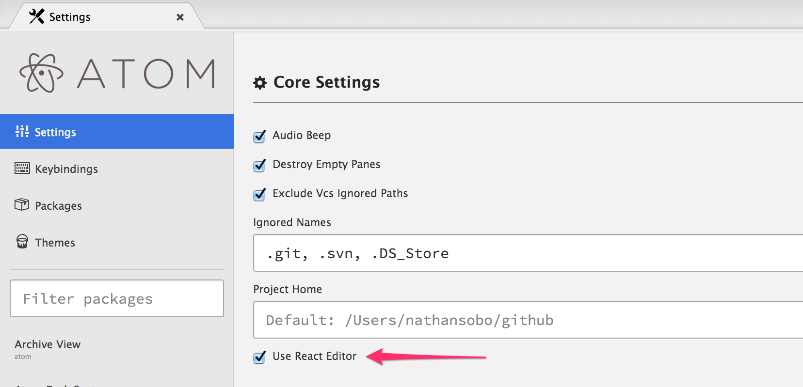

React Editor Enabled by Default
As of Atom version 0.116.0, we now enable the new React editor component by default.
The old editor will still be available behind a settings option for the next couple weeks:

If you need to disable the React editor because of a bug or strange behavior, please open an issue. We are aggressively fixing bugs related to the React editor with the intent of removing the old editor as soon as possible.
How do I get it?
All you need to do is update to the latest version of atom.
A note for package authors
Please check that your package or theme works with the new React editor. We have shimmed all of the old editor’s APIs, so there should be very little pain. If you are having trouble making your package work, let us know.
Moving forward
In the coming weeks, we will remove the old editor completely and deprecate old editor methods on the React editor.
We will be rolling out new APIs soon to compensate for the deprecated methods. Additionally we will have a blog post or two with concrete steps you can take to make your packages the best they can be.